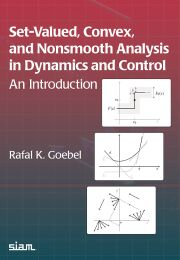
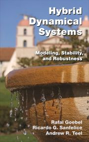

|
Set-Valued, Convex and Nonsmooth Analysis in Dynamics and Control
An Introduction Rafal K. Goebel Society for Industrial and Applied Mathematics (SIAM) 2024 Errata |
 |
|
Hybrid Dynamical Systems:
Modeling, Stability, and Robustness Rafal Goebel, Ricardo G. Sanfelice, Andrew R. Teel Princeton University Press (PUP) 2012 Errata (maintained by Ricardo G. Sanfelice) |
 |